LAB 1-1
Question 1 - Does either file match any existing antivirus signatures?
VirusTotal ile bunu tespit edebiliriz.Lab01-01.exe ve Lab01-01.dll'i upload edersek:
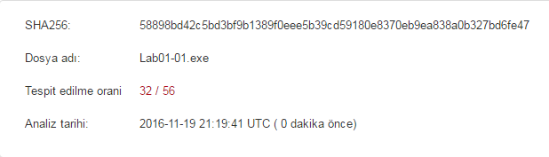
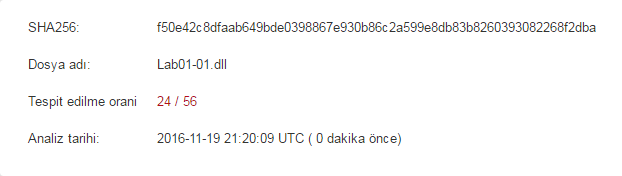
Question 2 - When were these files compiled?
Bu sorunun cevabı için PEview kullanacağız. .exe ve .dll'yi ayrı ayrı PEview ile açtıktan sonra IMAGE_NT_HEADERS/IMAGE_FILE_HEADER/TimeDateStamp alanına bakmamız gerekiyor. Bu kısım bize dosyaların ne zaman compile edildiğine dair bilgi verir.
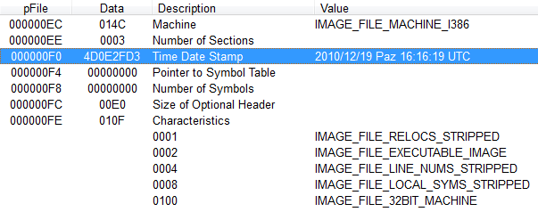
İki dosya da 19 Aralık 2010'da aynı dakika içerisinde compile edilmiştir. {16:16:19-16:16:38} Compile timelar arasındaki küçük farktan dolayı iki dosyanın da aynı pakete ait olduğunu(birbiriyle ilişkili) ve aynı kişi tarafından oluşturulduğunu anlayabiliriz. Aralarındaki ilişki ise .exe->.dll olmasından kaynaklı. .exe ya .dll'i çalıştıracak ya da başka bir yerde kullanacaktır. Herhangi bir Dynamic-Link Library kendi kendini çalıştıramaz.
Question 3 - Are there any indications that either of these files is packed or obfuscated? If so, what are these indicators?
Açıklamak gerekirse "obfuscated" olması malware author'un kodunu gizleme isteğini, "packed" olması ise sıkıştırılmış olduğu ve analiz edilemeyeceğini gösterir. (Packed ve obfuscated kodlar genellikle "LoadLibrary" ve "GetProcAddress" fonksiyonlarını kullanırlar.) Bu iki teknik de malware'i statik analiz ederken bizi kısıtlar. Soruya cevap verebilmemiz için ise PEiD kullanabiliriz.
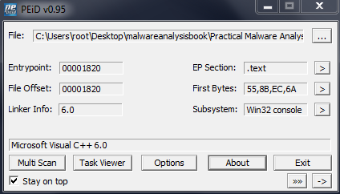
Kodun "Microsoft Visual C++ 6.0" ile compile edildiğini görebiliyoruz böylece "packed" olarak sınıflandırma yapamayız. Yani herhangi bir indication bulunmamakta.
Question 4 - Do any imports hint at what this malware does? If so, which imports are they?
Dependency Walker kullanarak .exe ve .dll'de bulunan imported fonksiyonları inceleyebiliriz:
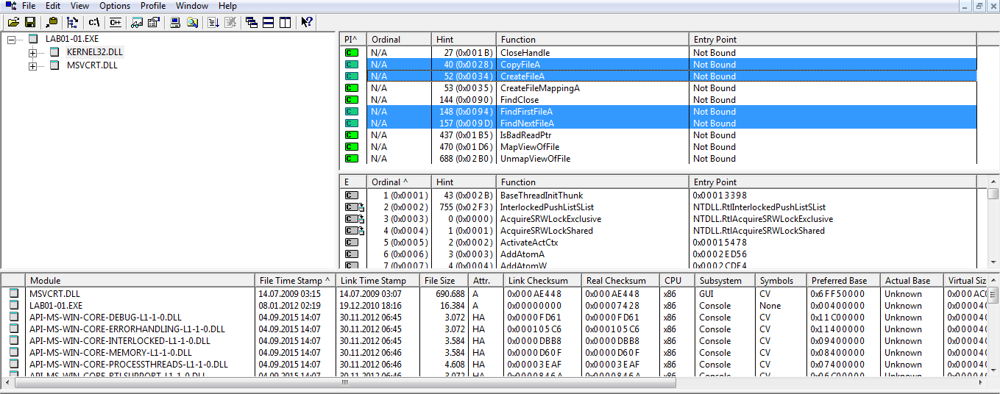
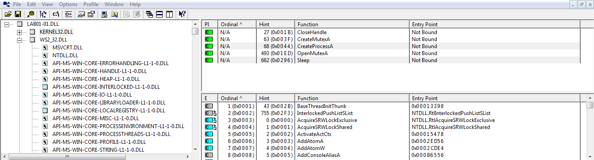
CreateProcess, FindFirstFile, FindNextFile ve CopyFile fonksiyonları bize soruda bahsedilen ipucunu veriyor. Malware, sistem dosyalarını açabiliyor ve üzerinde değişiklik yapabiliyor.
Question 5 - Are there any other files or host-based indicators that you could look for on infected systems?
Infected olduğu düşünülen sistemde kerne132.dll aranabilir. Burada kernel yerine kerne1 kullanılması kendisini bir sistem dosyası olarak gösterme isteğidir. Doğal olarak bunu host-based indicator olarak kullanabiliriz.
Question 6 - What network-based indicators could be used to find this malware on infected machines?
PEview ile Lab01-01.dll de bulunan SECTION.data kısmını incelediğimizde:
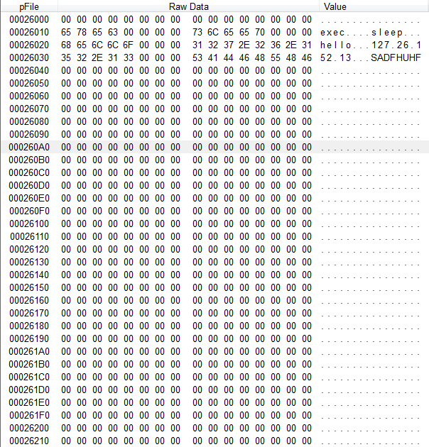
"...exec...sleep...hello...127.26.152.13...SADFHUHF" alanı göze çarpmakta. Network-based indicator olarak bu lokal ip adresini kullanabiliriz.
Question 7 - What would you guess is the purpose of these files?
Elde ettiğimiz bulguları birleştirelim; Dependency Walker kullanarak fonksiyonları incelediğimizde "CreateProcess" ve "Sleep" fonksiyonları malware'de ilgimizi çeken ilk fonksiyonlardı. SECTION.data kısmında ise gördüğümüz stringler {exec-sleep} ve bulduğumuz lokal ip adresini bir arada düşünürsek ağ üzerinden programa bir komut gönderiliyor ve bu komut da "CreateProcess" ile çalıştırılıyor. Zaten bu çalışma mantığı ve bulunan "CreateProcess" ve "Sleep" fonksiyonları ile malware'in backdoor olduğunu düşünebiliriz. exe, .dll'i çalıştırmak için kullanılacaktır.
LAB 1-2
// Labdaki soruların çözümleri genellikle birbirleriyle benzer olduğundan değişik olan soruları çözelim.
Question 2 - Are there any indications that this file is packed or obfuscated? If the file is packed, unpack it if possible.
Programı "packed" olarak nitelendirmemiz için birçok sebebimiz var. Öncelikle PEiD ile incelediğimizde EP Sectionların UPX0-UPX1-UPX2 şeklinde olduğunu görüyoruz:
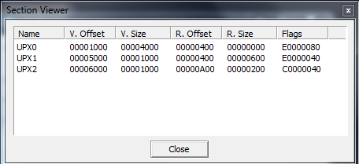
EP Sectiondan UPX packed olduğunu farketmesek bile UPX0'ın SECTION HEADER'ında "Virtual Size" ın 0x4000 fakat "Raw Data Size" ın 0 olduğunu görebiliriz. UPX1 veya UPX2'nin "Virtual Size" veya "Raw Data Size" ını karşılaştırmamamızın sebebi UPX0'ın büyük section olmasıdır. UPX packed olduğunu belirlediğimize göre dosyayı unpack edebiliriz.
upx -o unpackedmalware -d Lab01-02.exe
// Parametre olarak -o: output filename; -d: decompress edilecek filename'i belirtiyor.
Question 3 - Do any imports hint at this program's functionality?
Unpack ettikten sonra programı tekrar incelediğimizde "wininet.dll" i görebiliyoruz. İnternete olan bağlantımızın bu kısımda sağlandığını anlıyoruz. Ayrıca import edilen fonksiyonlarda advapi32.dll'de bulunmakta.
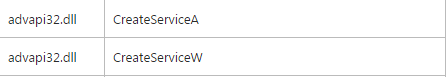
advapi32.dll'in servis oluşturmak için kullanıldığını öğrenmiş olduk. Stringlere baktığımızda ise "www.malwareanalysisbook.com" URL'inin oluşturulan servis sayesinde wininet.dll ile açılacağı çıkarımını yapabiliriz.
LAB 1-3
Question 2
LAB 1-2 de bulunan ikinci soru ile aynı soru. PEview ile incelediğimizde "FSG 1.0 -> dulek/xt" ile compile edildiğini görebiliyoruz.
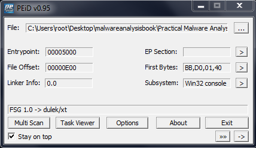
FSG'yi manuel olarak OEP bularak veya Joe Stewart'ın OllyBonE'sini kullanarak unpack edebilirsiniz. {http://www.joestewart.org/ollybone/}
LAB 1-4
Question 4 - This file has one resource in the resource section. Use Resource Hacker to examine that source, and then use it to extract the resource. What can you learn from the source?
Resource Hacker kullanarak malware'i açalım.
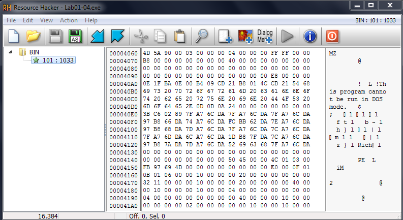
Tek kaynağımızın olduğu gözükmekte. Kaynağı incelediğimizde binary data içerisinde "This program cannot be run in DOS mode." stringini görebiliriz. Tüm Portable Executable(PE) dosya içerisinde bu DOS header'ı bulunmaktadır. Buradan anladığımız üzere kaynak ekstra bir executable dosya içermekte. Kaynağı dışa çıkaralım ve daha rahat inceleyelim.
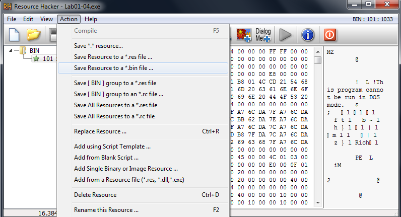
Dışa çıkardığımız kaynağı PEview kullanarak açalım. SECTION .rdata'yı incelediğimizde URLDownloadToFile fonksiyonunun çağırıldığını görebiliriz.
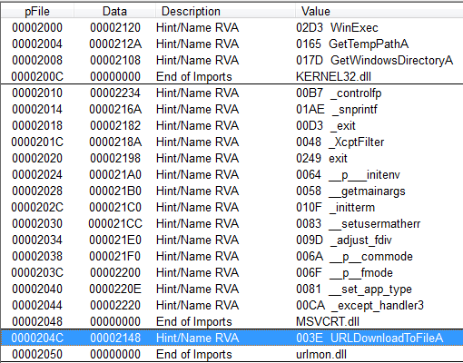
Peki bu fonksiyon ne için kullanılıyor? SECTION .data'da bulduğumuz "http.//www.practicalmalwareanalysis.com/updater.exe" nin indirilmesi için.
İlk Chapter olan Statik Analiz'e giriş yapmak adına güzel lablardı.